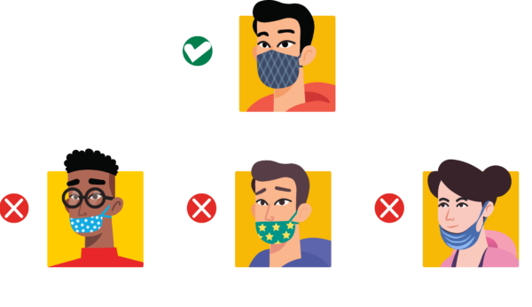

COVID Safety
Seating, Layout, & Dining
- Our theaters are operating at 50% capacity allowing plenty
of room for safe physical distancing between other
guests.
- Seats and tables have been physically spaced with each
table at least 6 feet from other tables.
- Our HVAC system is constantly circulating fresh air into
the theater.
- Our menu can be accessed via a QR code.
- All guests must wear a mask while inside the theater except
while eating or drinking.

Other Protective Measures
- Masks are worn by all our staff at all times.
- We have increased frequency of cleaning for all high
touch surfaces such as door handles, railings, and
the ticket counter.
- Each theater is cleaned and sanitized after every
movie showing.
- All staff members have their temperature recorded
upon arrival for their shift.
- Signs have been placed on the ground in hallways to direct
foot traffic to ensure social distancing.
- Plexiglass has been installed in front of the ticket counter
to ensure the safety of staff and guests.